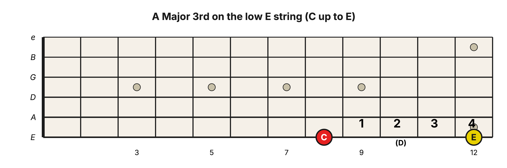
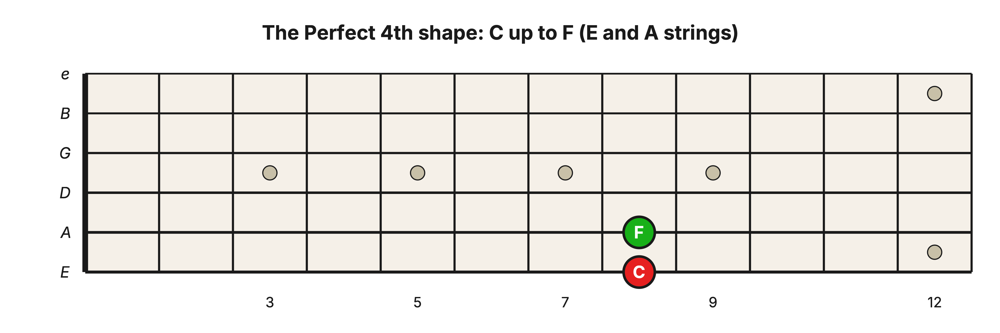
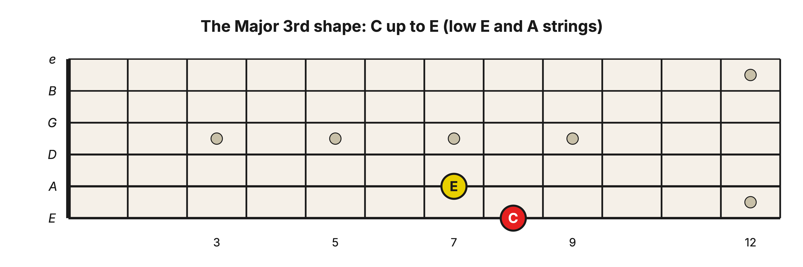
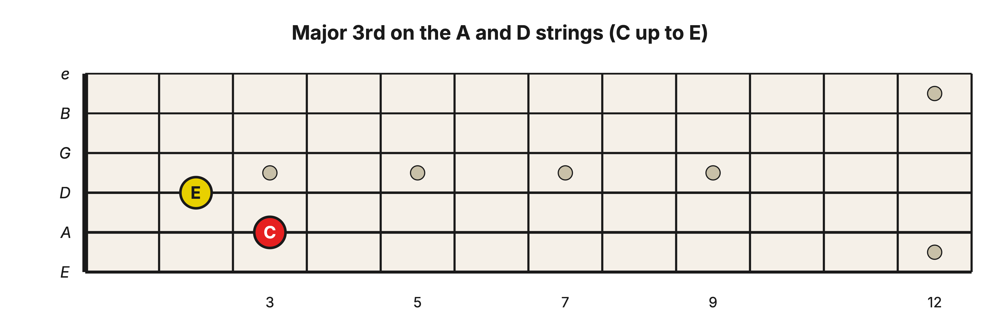
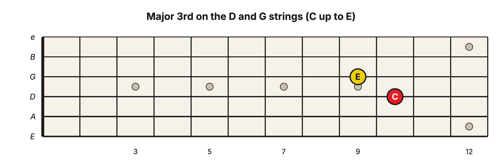
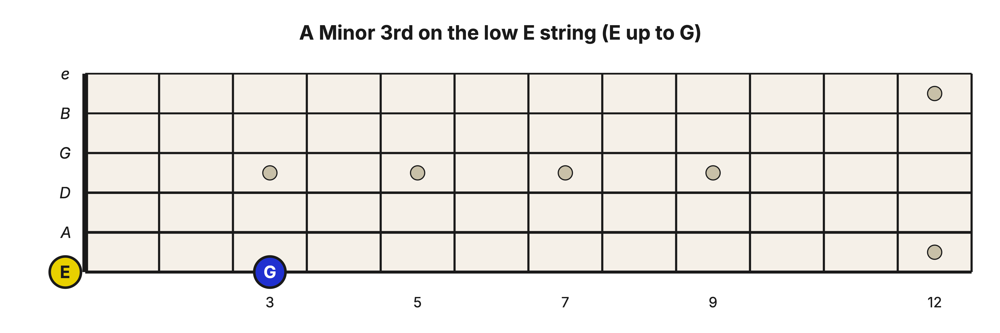
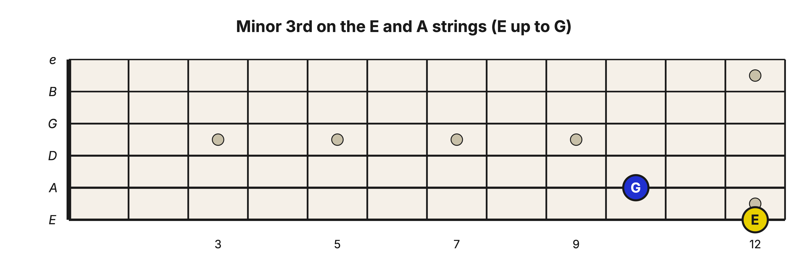
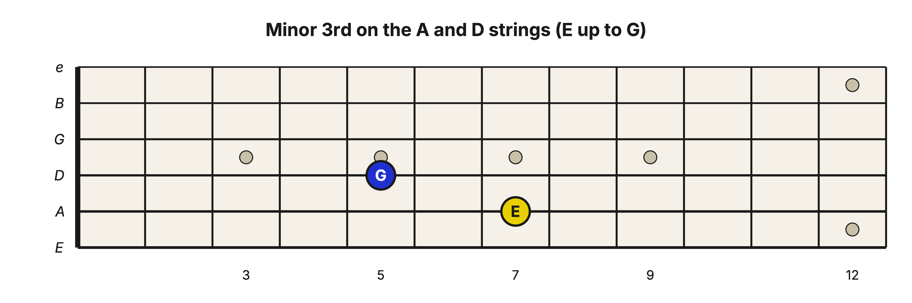
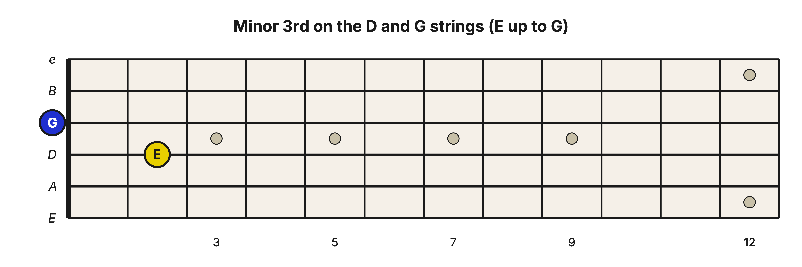

Level 2 · Chapter 2
The Fretboard: Major and Minor 3rd Interval Shapes on the E-A-D-G String Set
Now let's learn two common fretboard shapes.
The Major 3rd shape
To visualize it first, we'll learn the shape on a single string. On the low E string, the 8th fret is C and the 12th fret is E. Play them one after the other and you have walked a Major 3rd interval because you went up 4 half steps.

Now let's build that same C–E interval across two strings so you can play the two notes at the same time. Start from a shape you already know from Level 1, the Perfect 4th. Here is C–F:

C–F is a Perfect 4th because it spans 4 note names and you must traverse 5 half steps.
A Major 3rd is one half step smaller than a Perfect 4th because you only need to traverse 4 half steps. So on the fretboard, lower the top note down one fret. Like so:

This Major 3rd looks the same way on every bass string-set. On the A and D strings:

And on the D and G strings:

The minor 3rd shape
Let’s visualize this one on a single string first. On the low E string, the open string is E and the 3rd fret is G. Play them in turn and you have walked a minor 3rd, E up to G.

A minor 3rd is one half step smaller than a Major 3rd, so the upper note goes one more fret back. On the E and A strings, that is E on the low E string (12th fret) up to G on the A string (10th fret):

The same shape on the A and D strings, E up to G:

And on the D and G strings, E up to G (here the upper note is the open G string):

Hear it
Even if you don't know any of the notes on the fretboard, you can hear what the Major 3rd and minor 3rd intervals sound like. Try these Major and Minor shapes:
- D string, 2nd fret (the lower note) and G string, 1st fret. This is a Major 3rd shape.
- D string, 2nd fret and the open G string (not fretted). This is a minor 3rd shape.
Alternate between them. Can you hear the difference?
Exercise 1: Spot the 3rd (E-A-D-G)
Each item gives you two notes on a neighboring bass pair. Find them, name both notes, and label the interval a Major 3rd (4 half steps) or a minor 3rd (3 half steps).
- Low E string, 1st fret + A string, open
- Low E string, 5th fret + A string, 3rd fret
- A string, 3rd fret + D string, 2nd fret
- A string, 2nd fret + D string, open
- D string, 5th fret + G string, 4th fret
- D string, 2nd fret + G string, open
- Low E string, 3rd fret + A string, 2nd fret
- A string, 5th fret + D string, 3rd fret
Answer key
- F–A, Major 3rd
- A–C, minor 3rd
- C–E, Major 3rd
- B–D, minor 3rd
- G–B, Major 3rd
- E–G, minor 3rd
- G–B, Major 3rd
- D–F, minor 3rd
Exercise 2: Slide the shape up the neck
Pick one bass pair, say the D and G strings. For the Major shape, begin with the lower note at fret 1 so that the upper note can sit at fret 0; then slide both notes up one fret at a time to fret 12. For the minor shape, begin with the lower note at fret 2 so that its upper note can sit at fret 0; then do the same. Listen to how the sound darkens. You don’t need to name every note yet. The goal is to make each complete shape and hear its 3rd instantly, anywhere on the bass strings.
Success standard. At 60 bpm, play one pair every two clicks from the starting fret through fret 12 and back without losing the shape. Then choose four lower-note frets at random, build the requested quality without sliding into it, and name both notes. A run is complete only when the notes ring together and all four random checks are correct.